Your global partner in the world of media and advertising
20 years of experience across global markets
We are an international media group operating in the markets of Russia, the CIS countries, Europe, Asia, and the Middle East.
Our expertise covers the full cycle of advertising creation and placement — from developing a creative concept to guaranteed reach of a multimillion-dollar audience through our own satellite, digital, and out-of-home channels.
Exclusive access to an international audience. Unlike most agencies, we do not buy airtime — we own it. We are one of the largest media sellers, offering exclusive packages on 24 popular Russian TV channels broadcast via satellites worldwide.
Broadcast worldwide via international satellites. Exclusive advertising packages for every audience segment.
Our satellite broadcasting covers key markets with a high concentration of Russian-speaking audiences, while also attracting the attention of adjacent language groups.
We work with a unique and high-income audience, making our offering extremely attractive for premium brands.
A high level of trust in the content and, consequently, in the advertising shown on familiar channels. Our audience includes entrepreneurs, shareholders, and high-income viewers with an active lifestyle and diverse hobbies.
CLAN DUBAI has its own in-house team of professionals who handle every stage of creating advertising materials. We don't just place advertising — we create hits.
Multichannel digital campaigns with full localization, delivering millions of views and thousands of leads across 66+ countries.
From creative concept to measurable results — all under one roof
Extending your brand reach beyond screens — through airwaves and urban landscapes.
Partnerships with major holdings including Gazprom-Media and Russian Media Group. Reaching millions of listeners in over 1,000 cities across Russia and worldwide.

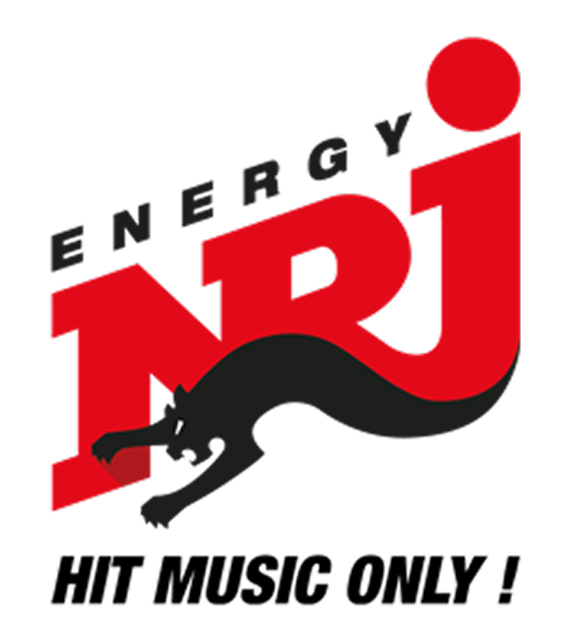

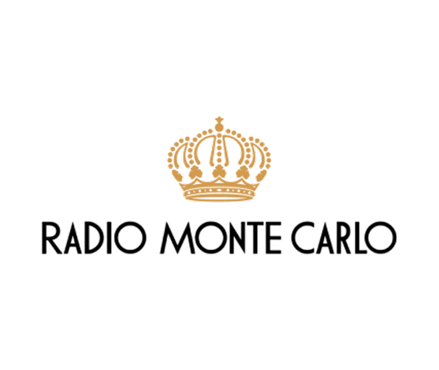
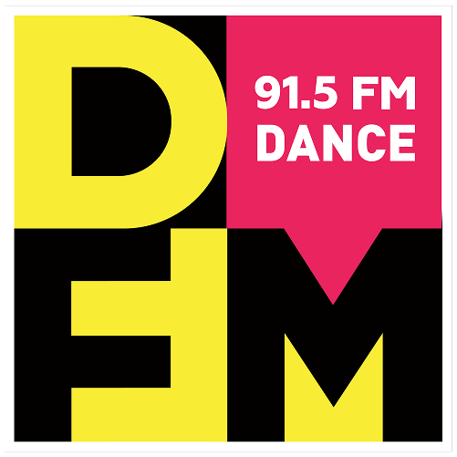
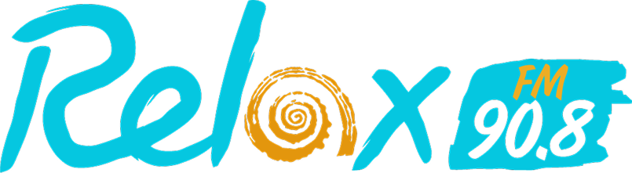
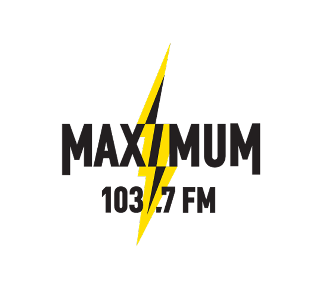
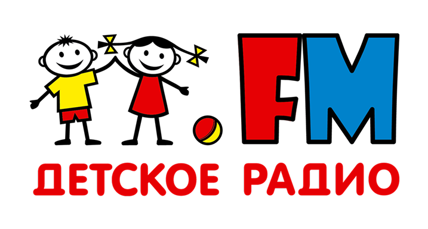
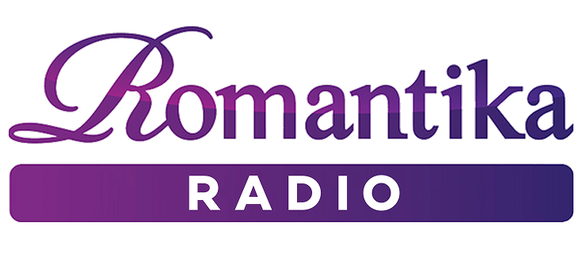

Promo video for the Ultra All Inclusive Cullinan Belek Hotel, Turkey
We work with market leaders, proving the effectiveness of our solutions in practice.
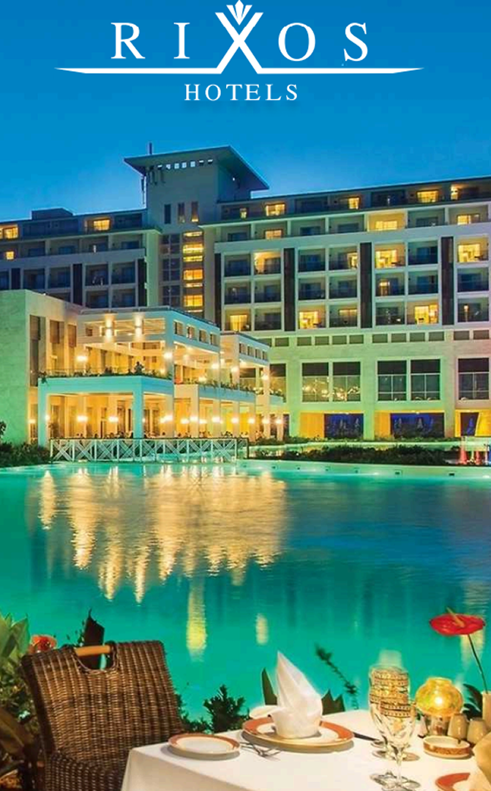
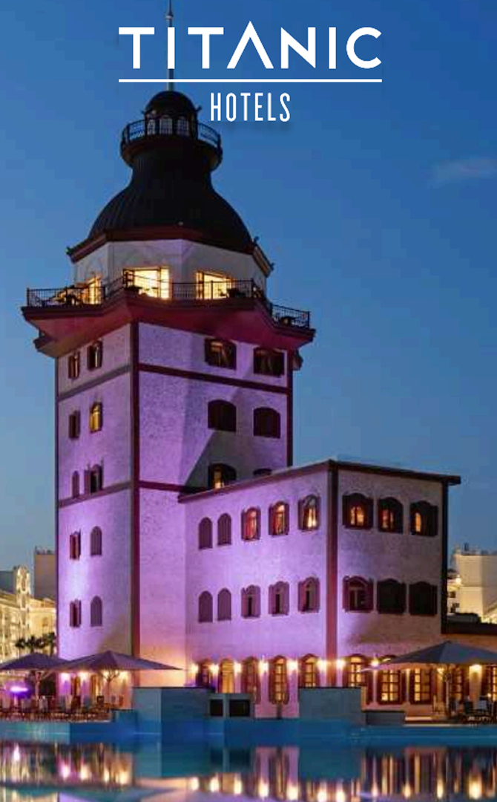
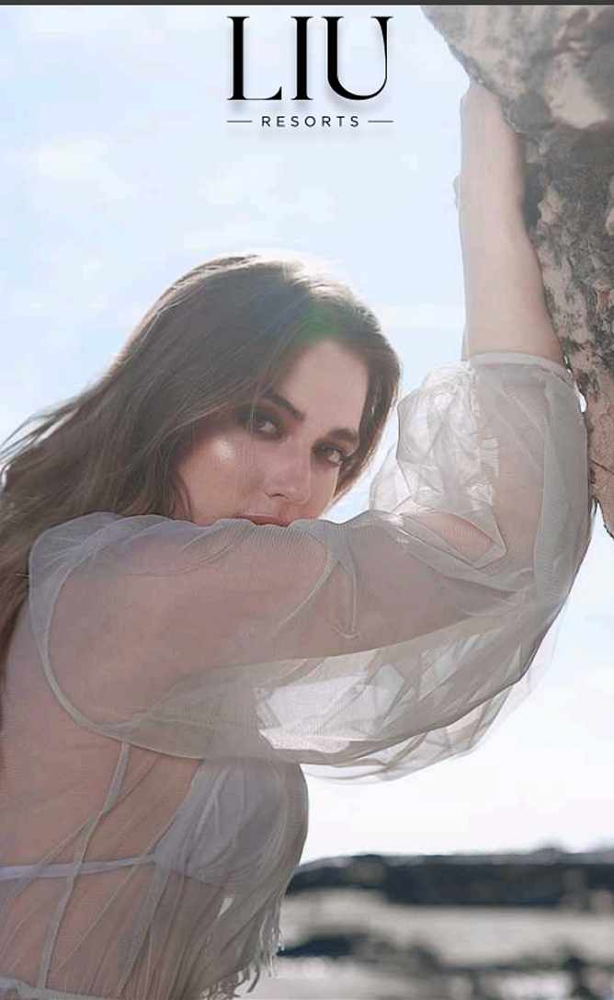
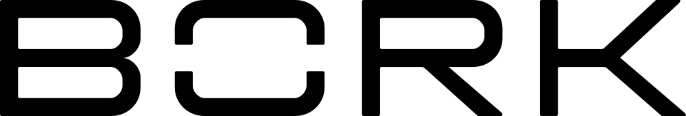
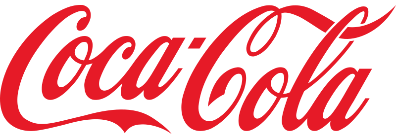

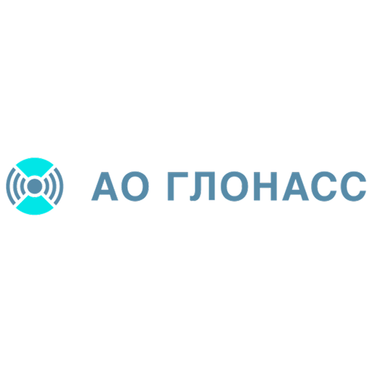
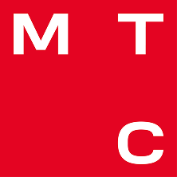
Use our interactive setup wizard to get personalised satellite antenna pointing parameters — azimuth, elevation and LNB skew — calculated automatically for your exact location.
3 steps · works in any country · EN / RU / TR